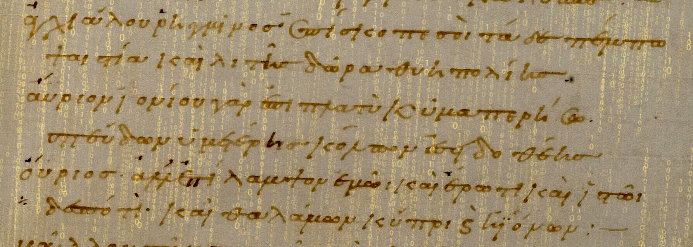

Présentation et probématisation du projet de fouille de texte

Présentation du sujet
Projet - Corpus
L’Anthologie grecque est un recueil qui regroupe la poésie épigrammatique grecque issue de la période classique jusqu’à la période byzantine, soit près de 4000 pièces, de 325 auteurs différents, s’étalant sur plus de 15 siècles. Telle que nous la possédons aujourd’hui, l’Anthologie a une histoire complexe (Cameron, 1993). L’expression « Anthologie grecque » désigne l’ensemble constitué par deux parties. D’une part, l’Anthologie palatine, un manuscrit datant du Xe siècle (le Codex Palatinus 23) retrouvé en 1606 par Claude Saumaise à la Bibliothèque palatine de Heidelberg. D’autre part, l’Appendix Planudea, soit les épigrammes absentes du manuscrit palatin présentes dans l’Anthologie de Planude, une compilation datant du début du XIVe siècle, rédigée par Maxime Planude (Aubreton, 1968 ; Beta, 2019).
Monument de la littérature, l’Anthologie est le document principal qui nous transmet la poésie épigrammatique antique (Gutzwiller, 1997 ; Gutzwiller, 1998). Né en Grèce, le genre de l’épigramme évolue de manière significative dans l’histoire de la littérature grecque, mais également au sein même de l’Anthologie. Initialement composée pour être gravée (epigramma signifie « texte inscrit sur un objet »), l’épigramme se présente comme un petit poème, simple, composé d’une ou de deux lignes. Les premières épigrammes étaient des épitaphes ou des inscriptions accompagnant une statue, un don ou un ex-voto. Vers le VIe siècle, ces inscriptions se versifient. Dès l’époque hellénistique, l’épigramme se détache de son support, se diversifie dans son propos et devient un véritable genre littéraire, caractérisée par sa brièveté (brevitas) et son trait piquant (argutia), et se grave désormais non pas dans le marbre, mais dans l’esprit du lectorat.
En plus de présenter un intérêt certain pour l’étude du genre épigrammatique (Prioux, 2008), l’Anthologie grecque constitue un corpus précieux et diversifié de formes intertextuelles, dont celle de la variation. Plusieurs des auteurs de l’Anthologie s’inspirent en effet les uns des autres (Waltz, 1960). La variatio, forme très spécifique d’intertextualité commune et prisée dans la littérature grecque, consiste à reprendre une pièce d’un autre auteur et de la réécrire avec des variations stylistiques, rhétoriques ou paradigmatiques (Laurens, 2012). Le procédé était particulièrement apprécié des épigrammatistes : la simplicité de la forme permettait aux auteurs de s’illustrer en l’espace de quelques vers. Ainsi, l’épigramme est souvent décrite comme un art de la variation en tant que tel (Taran, 1979). La nature même du corpus anthologique (la réunion de poèmes hétéroclites néanmoins reliés par des topoï communs) en fait une source d’intertextualité inépuisable. Certains thèmes reviennent particulièrement fréquemment, et les épigrammes se répondent, parfois avec plusieurs siècles de décalage (Gutzwiller, 1998). Cette forme (qui s’apparente presque à du plagiat), bien vue et encouragée par les pratiques rhétoriques, commande la production de la littérature grecque et son évolution (Laurens, 2012).
La Chaire de recherche du Canada sur les écritures numériques et leurs partenaires travaillent depuis plusieurs années à une édition numérique de l’Anthologie grecque (Vitali-Rosati, 2020 ; Vitali-Rosati, 2021). Cette édition et la structure de données qu’elle a permis de produire constituent le corpus de départ de notre projet. Leur édition numérique de l’Anthologie donne accès au texte original (image et transcription), à diverses traductions multilingues, aux commentaires marginaux du manuscrit (scholies, gloses, (inter)titres, etc.), mais aussi à des commentaires contemporains. La plateforme et le modèle de données sur lequel elle se construit favorisent la mise en évidence des relations intertextuelles présentes à l’intérieur du manuscrit, notamment par l’usage de marqueurs codés (auteurs, thèmes, mots-clés, etc.). À ce titre, et dans la continuité de leurs travaux, la Chaire de recherche a entamé au début de l’année 2022 une expérimentation inédite pour trouver une définition formelle – computationnelle et algorithmique – d’un concept littéraire au moyen des algorithmes de fouille de textes.
Problématique
L’Anthologie grecque propose L’épigramme, forme courte et La forme de l’Anthologie grecque L’Anthologie grecque comme horizon de recherche Le développement d’une problématique autour de l’Anthologie grecque La forme épigrammatique et l’histoire de l’Anthologie grecque offre la possibilité d’étudier Comme corpus, l’Anthologie grecque offre à la fois des contraintes importantes et des défis ; en tant qu’oeuvre littéraire, elle est importante, mais en tant que corpus pour la recherche en intelligence artificielle, sa taille est limitée. Qui plus est, les outils d’études du langage et de modélisation de la langue que nous retrouvons dans certains langages vivants comme le français ou l’anglais n’ont pas été développés pour le grec ancien.
La forme épigrammatique par sa longueur, ses sujets et ses contextes (changeant au fil du temps) forme les limites des méthodes utilisables sur un corpus qui en est exclusivement constituté, mais est aussi permissive pour certains algorithmes.
Donc, une part importante de notre problématique se doit d’être située par les contraintes de la forme et de la portée du corpus (temporelle et textuelle).
Dans sa forme initiale, le projet se veut une formalisation du concept de variation dans l’Anthologie grecque. Notre question de recherche en est une dont les résultats prévus pourront supporter le projet IAL puisque nous nous intéressons à la découverte de variations littéraires parmi les épigrammes de l’Anthologie grecque.
Étant conscients des approches déjà mises de l’avant par l’équipe de IAL et des futures étapes proposées par les nouveaux membres du projet, nous avons décider de d’utiliser des outils et méthodes, et de choisir un objectif qui permettrait d’améliorer les chances de réussite de ces autres projets tout en se concentrant sur un autre (set) d’algorithmes d’intelligence artificielle.
À l’aide du One Shot Learning, une méthode de reconnaissance de la similarité entre deux entités vectorielles. Le One Shot Learning offre de très bons résultats dans le domaine de la reconnaissance d’images, un tel algorithme étant capable de juger de la ressemblance entre deux visages ou espèces d’animaux ou de plantes à partir de données très limitées.
La découverte de toutes les variations d’un épigramme de l’Anthologie grecque est difficile, entre autres parce que plusieurs formes de variation ont été recensées, mais aussi parce que la taille du corpus dépasse les capacités de travail des humains.
Ainsi, la détection des variations, qui est un enjeu dans le projet initial (puisque de connaître d’avance les variations permettrait d’entraîner un modèle capable de reconnaître les caractéristiques textuelles qui confirment la présence d’une variation), se pose comme tâche heuristique à accomplir.